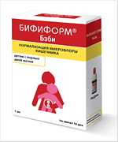

В 2009 г. в России был зарегистрирован в качестве биологически активной добавки к пище препарат Бифиформ Бэби (компания Ferrosan A/S, Дания), содержащий два штамма пробиотических микроорганизмов — Bifidobacterium lactis BB-12 и Streptococcus thermophilus TH-4. Данная пробиотическая суспензия предназначена для восстановления баланса кишечной микрофлоры у детей с первых дней жизни.
В настоящее время внимание врачей различных специальностей всё больше привлекают пробиотики — живые микроорганизмы, которые при назначении в адекватном количестве оказывают положительное воздействие на здоровье человека.
Применение пробиотиков в клинической практике имеет под собой достаточно мощную доказательную базу — проведены тысячи рандомизированных контролируемых исследований, выполнены мета-анализы по оценке эффективности и безопасности пробиотиков как для профилактики и лечения инфекционной патологии, так и при неинфекционных заболеваниях, причём результаты этих исследований весьма многообещающие.
Пробиотики не только являются предметом всесторонних научных изысканий, но и представляют собой важный продукт на мировом рынке. На сегодняшний день широкому кругу потребителей доступны сотни пробиотических продуктов питания, биологически активных добавок к пище и лекарственных средств, содержащих различные штаммы пробиотических микроорганизмов, которые помогают решить самые разнообразные проблемы со здоровьем. Но вполне логично встаёт вопрос, какой из пробиотиков лучше использовать в конкретной клинической ситуации, например, у детей первых месяцев и даже дней жизни или у взрослых пациентов; какой препарат назначить с лечебной целью и что применять профилактически; отдать предпочтение пищевым продуктам, обогащённым пробиотиками, или остановить свой выбор на биологически активных добавках к пище или лекарственных препаратах пробиотиков?

В феврале 2009 г. в России был зарегистрирован в качестве биологически активной добавки к пище препарат Бифиформ Бэби (компания Ferrosan A/S, Дания), содержащий Bifidobacterium lactis BB-12 (109 КОЕ в одной дозе) и Streptococcus thermophilus TH-4 (108 КОЕ в одной дозе) (свидетельство о государственной регистрации № 77.99.23.3.У.1295.2.09 от 13.02.2009). Данная пробиотическая суспензия предназначена для восстановления баланса кишечной микрофлоры у детей с первых дней жизни. Препарат Бифиформ Бэби выпускается во флаконах, содержащих 6,9 мл масляного раствора, укупоренных крышкой, в которой находится 160 мг порошка; при смешивании содержимого получается 7 мл суспензии для приёма внутрь. Флаконы поставляются в комплекте с дозирующей пипеткой. Препарат может применяться у детей с первых дней жизни и взрослых по одной дозе (0,5 мл) 1 раз в день во время приёма пищи на протяжении 10 и более дней.
Bifidobacterium lactis (BB-12) является одним из наиболее изученных пробиотических штаммов микроорганизмов с явным благотворным влиянием на здоровье человека [1]. ВВ-12 содержится в естественной биоплёнке кишечника у здоровых людей и обеспечивает колонизационную резистентность (т.е. устойчивость к колонизации кишечника патогенными микроорганизмами). Именно бифидобактерии являются преобладающими микроорганизмами, заселяющими кишечник детей, находящихся на грудном вскармливании, с 1-2 недели жизни. Детские молочные смеси, обогащённые B. lactis, применяются уже на протяжении более 15 лет в 30 странах мира.
Streptococcus thermophilus TH-4 (или термофильный стрептококк) — единственный вид термофильных молочнокислых кокков, регламентируемый российскими ГОСТами для использования в качестве закваски при производстве йогурта, сметаны, ряженки и некоторых видов сыров. Следует отметить, что S. thermophilus поглощает и перерабатывает лактозу, и в связи с этим эффективен при лактазной недостаточности; оказывает подкисляющее действие, обеспечивая тем самым бактерицидный эффект в отношении патогенных микроорганизмов; а также способен синтезировать и выделять полисахариды, что делает питательную смесь более плотной и способствует профилактике и лечению срыгиваний.
B. lactis и S. thermophilus применяются в молочной промышленности с 1984 г. За 25 лет использования не было получено данных о плохой переносимости и возникновении нежелательных реакций при использовании данных штаммов микроорганизмов. И BB-12, и S. thermophilus имеют т.н. GRAS-статус (Generally Regarded as Safe), означающий международное признание их безопасности и разрешающий их неограниченное использование в пищевой и фармацевтической промышленностях, а также безопасное применение у детей с первых дней жизни [2].
По данным Комитета по Питанию Европейского общества детской гастроэнтерологии, гепатологии и питания (European Society of Paediatric Gastroenterology, Hepatology and Nutrition — ESPGHAN) применение пробиотиков в неонатологии и раннем детском возрасте имеет три важных преимущества [3]:
- Профиль эффективности и безопасности пробиотиков делает их привлекательной альтернативой большому количеству других, более агрессивных, терапевтических подходов;
- Приём пробиотиков является простым, неинвазивным методом воссоздания нормальной микрофлоры естественным путём с использованием природных механизмов;
- Данный метод эффективен для профилактики некротического энтероколита — одного из наиболее опасных источников тяжёлых осложнений у детей с низкой массой тела при рождении.
Эффективность комбинации пробиотических микроорганизмов B. lactis ВВ-12 и S. thermophilus TH-4 была продемонстрирована в ряде клинических исследований, результаты которых показали, что ВВ-12 + S. thermophilus способствуют профилактике диареи, вызванной ротавирусом, и увеличению прибавки массы тела грудных детей [4].
Ещё в 1994 г. в двойном слепом рандомизированном плацебо-контролируемом исследовании с участием 55 младенцев и детей в возрасте от 5 до 24 месяцев изучалась способность В. lactis ВВ-12 и S. thermophilus TH-4 предотвращать развитие нозокомиальной диареи у госпитализированных детей с хроническими заболеваниями. Так, при использовании препаратов, содержащих оба вышеуказанных микроорганизма, достоверно уменьшались частота возникновения острой диареи и выделение из кишечника ротовирусов [5].
В 2004 г. результаты двойного слепого рандомизированного плацебо-контролируемого исследования, в котором приняли участие 188 здоровых детей в возрасте от 3 до 24 месяцев, доказали, что включение штаммов B. lactis и S. thermophilus в состав молочной смеси обеспечивает статистически достоверное (р<0,001) уменьшение числа эпизодов кишечной колики у детей, получавших пробиотики, по сравнению с контрольной группой, а также снижает частоту использования антибиотиков в группе применения пробиотиков (р<0,001). Данное исследование продемонстрировало также хорошую переносимость и благоприятный профиль безопасности B. lactis и S. thermophilus, применявшихся, в среднем, на протяжении 210 дней [6].
По результатам мета-анализа 6 плацебо-контролируемых исследований у детей (n=766), в которых изучалась эффективность штаммов Lactobacillus rhamnosus, Saccharomyces spp., Bifidobacterium lactis и Streptococcus thermophilus, оказалось, что применение пробиотиков приводит к снижению риска возникновения антибиотик-ассоциированной диареи с 28,5% до 11,9% (относительный риск 0,44) [7].
Применение пробиотиков эффективно для профилактики возникновения некротического энтероколита (НЭК) новорождённых — серьёзного заболевания, которое до сих пор остаётся одной из лидирующих причин смертности у недоношенных детей с очень низкой массой тела при рождении. По данным различных авторов, НЭК развивается у 20-28% таких детей. В рандомизированном плацебо-контролируемом исследовании, проведённом в 2005 г., было показано, что частота возникновения НЭК у недоношенных новорождённых с массой тела ≤1500 г, получавших смесь пробиотиков (B. infantis, S. thermophilus и B. bifidus), была достоверно ниже, чем в группе плацебо (4% vs 16,4%; р=0,03). Кроме того, у детей, получавших пробиотики, отмечалось менее тяжёлое течение НЭК в случае его возникновения. В группе применения пробиотиков не было зарегистрировано случаев НЭК с летальным исходом, в то время как в контрольной группе 15 детей (21%) погибли от НЭК [8].
Таким образом, эффективность и безопасность пробиотических микроорганизмов B. lactis ВВ-12 и S. thermophilus TH-4 доказана не только более чем 20-летним опытом применения в пищевой промышленности, но и результатами контролируемых клинических исследований. Поэтому новый пробиотик Бифиформ Бэби, содержащий указанные микроорганизмы, может служить эффективным, безопасным и удобным средством для восстановления баланса кишечной микрофлоры и профилактики целого ряда патологических состояний со стороны желудочно-кишечного тракта у детей с первых дней жизни.
Список используемой литературы:
- Salminen S., Benno Y., de Vos W. Intestinal colonisation, microbiota and future probiotics? Asia Pac J Clin Nutr. 2006; 15(4): 558-62.
- Agency response letter GRAS Notice No GRN 000049, U.S. Food and Drug Administration Center for Food Safety and Applied Nutrition Office of Food Additive Safety, March 19, 2002.
- Agostoni C., Axelsson I., Braegger C., et al; ESPGHAN Committee on Nutrition. Probiotic bacteria in dietetic products for infants: a commentary by the ESPGHAN Committee on Nutrition. J Pediatr Gastroenterol Nutr. 2004; 38(4): 365-74.
- Nopchinda S., Varavithya W., Phuapradit P., et al. Effect of bifidobacterium BB-12 with or without Streptococcus thermophilus supplemented formula on nutritional status. J Med Assoc Thai. 2002; 85 Suppl 4: S1225-31.
- Saavedra J.M., Bauman N.A., Oung I., et al. Feeding of Bifidobacterium bifidum and Streptococcus thermophilus to infants in hospital for prevention of diarrhoea and shedding of rotavirus. Lancet. 1994; 344(8929): 1046-9.
- Saavedra J.M., Abi-Hanna A., Moore N., Yolken R.H. Long-term consumption of infant formulas containing live probiotic bacteria: tolerance and safety. Am J Clin Nutr. 2004; 79(2): 261-7.
- Szajewska H., Ruszczynski M., Radzikowski A. Probiotics in the prevention of antibiotic-associated diarrhea in children: a meta-analysis of randomized controlled trials. J Pediatr. 2006; 149(3): 367-72.
- Bin-Nun A., Bromiker R., Wilschanski M., et al. Oral probiotics prevent necrotizing enterocolitis in very low birth weight neonates. J Pediatr. 2005; 147(2):192-6.